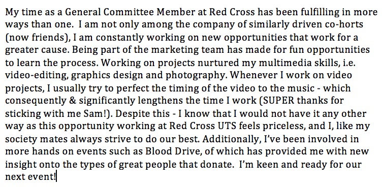

Blog
What I'm Up To
29/9/18
Listen Out 2018
I applied for a volunteer position at Listen Out 2018 through my UTS Red Cross mates and a Save-A-Mate (under Red Cross Australia) connection and found myself with a team of good spirited folks. It was my first time at a music festival like this and it was an eye-opening experience for understanding the culture better. There were many people on substances, or simply drunk, but with the existence of the Save-A-Mate program there was an effective countermeasure to the potential negative outcomes of substance abuse. Our team was able to help those of whom came for aid or were brought in, and I am glad to have been part of a fun and fulfilling experience.
-
.jpg)
Post event Listen Out sign
-
.jpg)
My favourite in the line-up Snakehips came on as I transferred huts
28-31/8/18
Pay It Forward Week @ UTS
What a great time running a PIFW stall with my fellow volunteers as we advertised for donations of non-perishable foods, clothing, toys and books.
This event is held by UTS Red Cross, Business Society and the Communications Society. Examples of where the donations will go include: books donated to the Philippines, and the food to the Australian Red Cross refugee centre. It was a fun time hanging with my co-horts and conversing with donors and potential donors. A lady even came in with 16 food items! I took quite a bit of pictures on my camera for the sake of it and even got creative with my mates (also finally learnt what a flat lay photo is).
-
.jpg)
Flatlay photo of an amazing single donation
-
.jpg)
Foreground: Toys, Background: Friend
-
.jpg)
Day 2 Spread
-
.jpg)
Day 5 Spread
17/8/18
Accenture Open Day
It was a fun time attending Accenture Open Day with a couple of likeminded friends. We came in with expectations of understanding the workplace culture a lot more, and to see what opportunities behold us at Accenture. Needless to say, our expectations were met. I had a great time conversing with a lot of their employees, asking them about their perspective of how the job treats them and how they push onwards to do what they need to do. One of my most memorable conversations were with one of Accenture's technology consultants, Kanchan Vaidya. One of her points emphasized a lot on self betterment, and the benefits of undergoing meditation in order to clear your mind. It was an interesting and unexpected point, but is definitely a welcome tip.
-
.jpg)
New and Old friends come together
-
.jpg)
Awesome Interior @ Accenture Sydney
16/8/18
UTS Red Cross First Aid Event + The Amazing KEN
This afternoon I closed my society’s First Aid event, making sure to see the new First Aiders a very GOOD bye and a great time. It was a nostalgic sight seeing students sit on the ground listening to the instructor. The instructor’s name is Ken and proved to be very helpful to the students (Ironically I understood very FEW of the terms he mentioned but I got the concepts thanks to his great explanations). I stood back to help Ken with his departure, and fortunately was able to learn more about him (he volunteers to help fight FIRES). Eventually Ken and I started a deep conversation about how sad it is that people don’t understand that there are more people that care about them than don’t (how thematic). Ken is a father of 2, a true blue First Aid teacher and made me almost tear up.
-
.jpg)
Class in Session
-
.jpg)
Group Photo!
-
.jpg)
Amazing Ken + Me
15/8/18
Deloitte Insight Night!
I attended Deloitte’s Insight Night and gathered useful information about the friendly and professional nature of Deloitte. I had the privilege to speak to their many representatives, including Jenna their front-end developer at Digital, Anton who manages UX at Digital, and Simon who is a graduate who has been working at Deloitte for 8 months in their Security sector. Speaking to these wonderful people felt empowering and led me to better understand what areas in IT I yearn to work in.
Of these include:
- Consultancy – Exposure to different types of clients pinch my curious personality and passion for close collaboration)
- UX design – Working with human centered design methods makes for a fulfilling job with much room for creativity and inquisitive communication)
- Security – I have always been interested in current technology as a child, and so used to snoop around the processes of ‘hacking’ gaming machines and even found success doing it on several machines (using only internet tutorials). Working for Deloitte Security means that you may be preceding hacks in order to prevent it from happening. Simon demonstrated it during the night and the processes throw me back!
14/8/18
The Job Truth Series: Interaction Design
Today I attended an informational event named ‘The Job Truth Series: Interaction Design’ at UTS. There were 5 guest speakers, all of whom have a background in UX. The speakers lent us a piece of their background and their experiences.
They answered many questions asked by the audience, one of which was – “How in demand are UX/UI designers in Sydney, and how necessary is it to know programming/software development as a designer?”.
Daniel Postlethwaite, Senior Digital Recruitment Consultant at Hays IT said that the job is rapidly growing in Sydney. Viveka Weiley (Head of New Things at CHOICE) answered that the development side of UX is not as much coding, but contributes heavily to the prototyping side of it. I learnt that the RnD process involves understanding how to use traditional brainstorming processes (e.g. hand to paper drawing) and using hi-fi prototyping applications, i.e. Sketch.
Ref:
https://medium.springboard.com/the-art-of-the-user-interview-cf40d1ca62e8
-
.jpg)
Special Guests
-
.jpg)
Good Man + Danica (Friend & Special Guest) + Me + Kim (Tutor & Friend)
-
.jpg)
Head of Interaction Design @ UTS - Andrew Johnston + Me + Viveka Weiley
10/8/18
Reading: How to Interview
I read a very useful article my tutor for Advanced Interaction Design - Kim Lim linked me.
It focuses on how to conduct an effective interview.
Key points:
- Keep the questions and your personal stance neutral
- Be responsive to the interviewee and create a natural conversation
- Don’t fill in all the silences and use intriguing expressions, i.e. subtle lifting of eyebrows. Participants tend to expand on their answer in the moment of silence or after a good eyebrow lift
8/8/18
Internship Careers Fair
I attended the Careers fair as there were many IT based internships and companies to learn about, including InfoSys, ACS & Suncorp. Talking to the representatives gave me relevant insight as to how their sectors work and the opportunities available within them. I had a fun extended talk with a representative at the Suncorp booth who happens to be an executive of their IT team.
2/8/18
Clubs Day representing UTS Red Cross
Today was a fun day advertising and selling our UTS Red Cross membership. There was a lot of traffic in our area and fortunately we had some our friends coincidentally rock up at our stall of whom were quite easy to persuade into joining our society. We made record signups!
15/7/18
UTS RC Experience Summary
Today my friend and Vice President of UTS Red Cross – Daniel Ferrel asked me to create a 150 word summary of my time as a GC member at the society. It was a fun time recollecting what I remember of my contributions with UTS RC. This screenshot should reflect how much I love the team and what we do.

15/6/18
UTS Interaction Design & Games Evening #2
Guest Speaker: Viveka Weiley, Head of New Things at Choice
This night produced many renewed mindsets about UX as Viveka spoke about the direction Interaction and Games Design is headed towards.
The significance of this night to me is his explanation of the practicality of a UX designer’s work. Much MUCH more than an office job, a UX designer can MAKE his career by pitching his OWN ideas to those who share his ideals and can make the DREAM happen.
Ref:
https://www.eventbrite.com.au/e/uts-interaction-design-games-evening-2-tickets-46687188638#tickets
22/5/18
UTS Amazing Race w/UTS RC Team
What a HECTIC day competing at the UTS Amazing Race with my Red Cross squad. There were so many disqualifications during the race, one of which happened right in front of us (letting them go first was part of our plan). Nevertheless it was so much fun seeing each other pant for our lives while frantically trying to find out the answer to the riddles. We didn’t rank competitively, but I know we won in our hearts <3.
12/5/18
UTS Red Cross Committee Bowling & Escape Room
Had a brilliant time with my RC mates struggling to bowl. The few 9s I got taunt me to this moment (no strikes … YET) but it was awesome. We did the horror escape room and let me just say I didn’t realise I could get spooked with so many people around me.
3/5/18
UTS Interaction Design & Games Evening
Guest Speaker: Susan Wolfe, UX Practitioner and Educator for 30+ years
Susan Wolfe delivered a fantastic socially interactive presentation conveying her experiences in her UX career. I learnt tonight that in order to live a fulfilling life as a UX designer, I must apply the design techniques I learn here to organizations that extend even farther than where I live. To work is one thing, but to positively affect the world in what I do should be what I aspire to be.
Ref:
https://www.eventbrite.com.au/e/uts-interaction-design-games-evening-tickets-45222884866?